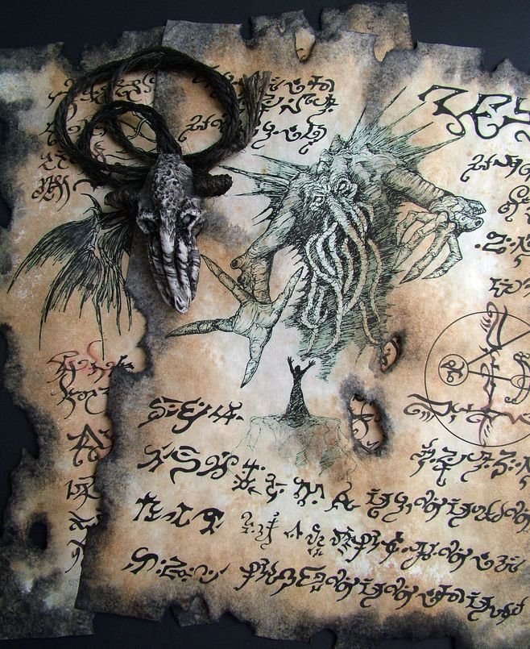

walks up to the altar and starts reading through the ripped pages of what seem to be a Grimoire or Bestiary of some kind as looks at some of the pages of these other wordly beings they become delirious and feels like they can hear start to hear whispers but cant seem to make out the language that its in.
